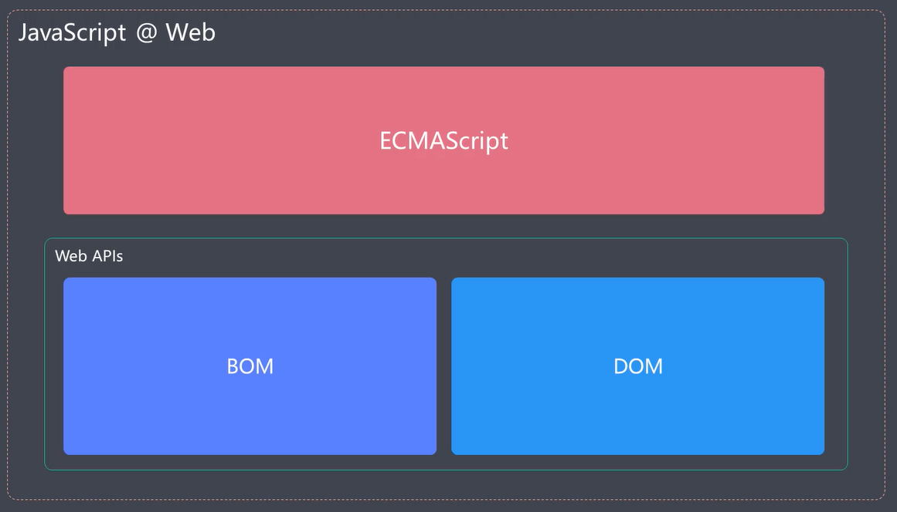

ECMASsript（ES）
ES通常看做JavaScript的标准化规范，但实际上JavaScript是ECMAScript的扩展语言，在ECMAScript中只提供了最基本的语法。 JavaScript中语言本身指的就是ECMAScript。2015年开始保持每年一个版本的迭代。


ES2015（http://www.ecma-international.org/ecma-262/6.0/）
ES2015产生的变化主要有4大类
1、解决原有语法上的一些问题或者不足（let,const）
2、对原有语法进行增强(结构赋值，展开运算符，参数默认值，字符串模板）
3、全新的对象，全新的方法，全新的功能。（promise,proxy,obj.assign()）
4、全新的数据类型和数据结构。(symbol,set,map)
闭包
一个函数内部返回一个匿名函数，这个匿名函数就称为闭包
在一个函数内部可以访问到另一个函数内的局部变量 这个函数称为闭包
闭包的形式多样，但都是局部函数全局执行
闭包是指有权访问另一个函数作用域中的变量的函数
闭包作用 ：
可以访问一个函数内部的私有变量
通过闭包 可以延长一个局部变量的生命周期 将一个函数内部的私有变量长期驻留在内存里
垃圾回收机制 ： 回收的是全局变量 不会回收 私有变量和函数参数
注意 ： 闭包中的this 指向 window
--------------------------------------------
var elements = [{}, {}, {}]
for (var i = 0; i < elements.length; i++) {
elements[i].onclick = (function (i) {
return function(){
console.log(i)
}
})(i)
}
elements[1].onclick()
//1
let块级作用域
作用域-代码当中的一个成员能够起作用的范围，在ES2015之前，ES 中只有两种作用域， 全局作用域 和 函数作用域
ES2015中又新增加了块级作用域也就是一对{ }范围。
----------------------------------------------
模拟给dom绑定事件。
var elements = [{}, {}, {}]
for (var i = 0; i < elements.length; i++) {
elements[i].onclick = function () {
console.log(i)
}
}
elements[1].onclick()
//3
因为打印的i始终都是全局的变量i,当循环结束后i的值变为3，所以不管打印哪个元素的click结果都是3。
----------------------------------------------
elements[0].onclick()
var elements = [{}, {}, {}]
for (let i = 0; i < elements.length; i++) {
elements[i].onclick = function () {
console.log(i)
}
}
elements[0].onclick()
//0
i只能在块级作用域内被访问。其实内部也是一种闭包的机制。
----------------------------------------------
在for循环中还有特别之处，在for循环内部有两层作用域。
for(let i = 0 ; i <3 ;i++){
let i = 'foo'
console.log(i)
}
//foo,foo,foo
循环体内层的i是独立的作用域。外层的i是for循环本身的作用域。
----------------------------------------------
let不会变量提升。
为什么不在for的基础上进行升级？原因为升级var的话会导致以前的项目无法运行，所以声明了新的关键词let。
CONST
声明一个只读的恒量/常量，在let基础上多了‘只读’特性，声明过后不允许再修改。
声明和赋值必须在一个语句中。
最佳方式: 不用var ， 主要const，配合let。
数组的解构
从数组或对象中获取指定元素的一种快捷方式。
const arr = [100,200,300]
const [,,cc] = arr
console.log(cc)
// 300
----------------------------------------------
const path = '/foo/bar/zac'
const [,pathfoo,pathbar,pathzac] = path.split('/')
console.log(pathfoo,pathbar,pathzac)
// foo bar zac
----------------------------------------------
对象的解构
const obj = {name:'pxr',age:18}
const { name } = obj
console.log(name)
// pxr
如果变量名和被解构出来的属性名冲突，可以重定向。
const obj = {name:'pxr',age:18}
const name = ‘park’
const {name:objName} = obj
console.log(objName)
// pxr
----------------------------------------------
可以添加默认值
const obj = {age:18}
const name = 'park'
const {name:objName = 'hah'} = obj
console.log(objName)
// hah
模板字符串
用反引号``
1、支持换行
const str = `pxr
park`
console.log(str)
// pxr
park
2、转义， 用反斜杠\
const str = `\`string\``
console.log(str)
// `string`
3、支持插值表达式的方式在字符串中嵌入对应的数值
const name = 'pxr'
const msg = `hello, ${name}`
console.log(msg)
${}里的内容是标准标准的js，不仅仅可以嵌入变量，还可以嵌入任何标准的js语句，输出返回值
const msg = `${1+2}---${Math.random()}`
模板字符串标签函数
模板字符串的标签就是一个特殊的函数，
使用这个标签就是调用这个函数
const str = console.log`hello world`
// ['hello world']
const name = 'tom'
const gender = false
function myTagFunc (strings, name, gender) {
// console.log(strings, name, gender)
// return '123'
const sex = gender ? 'man' : 'woman'
return strings[0] + name + strings[1] + sex + strings[2]
}
const result = myTagFunc`hey, ${name} is a ${gender}.`
console.log(result)
// hey, tom is a woman
字符串的扩展方法
includes()
startsWith()
endsWith()
const message = 'Error: foo is not defined.'
console.log(message.startsWith('Error'))
//true
console.log(message.endsWith('.'))
//true
console.log(message.includes('foo))
//true
参数默认值
function foo (bar,enable = true){
console.log('foo invoked -enable:')
console.log(enable)
}
直接在形参后面加=号赋默认值，如果有多个参数这种带默认值的参数一定要出现在参数列表的最后。
剩余参数（rest parameters）
function foo(){
console.log(arguments)
}
foo(1,2,3,4)
// [Arguments]{'0':1 , '1':2 , '2':3 , '3':4}
//这个是一个伪数组。
在ES2015中可以用...的操作符来取代arguments
function foo (...args){
console.log(args)
}
foo(1,2,3,4)
//[1,2,3,4]
因为接受的是所有的参数，所以必须出现在参数列表的最后，并且只能使用一次。
展开数组（spread）
const arr = ['foo','bar','baz']
console.log.apply(console,arr)
//foo bar baz
---------------------------------------------
在ES2015中可以直接用...来操作。
console.log(...arr)
//foo bar baz
箭头函数
const inc = n=> n+1
console.log(inc(100))
如果只有一个参数可以省略参数里的()，如果只有一行执行代码可以省略{}
如果是多行执行代码，需要被{}包裹，并且需要使用return来返回。
方便了回调函数的编写。
箭头函数里的this。
相比于普通函数，箭头函数不会改变this指向。
---------------------------------------------------
普通函数的this始终指向调用这个函数的对象。
const person = {
name: 'tom',
sayHi: () => {
console.log(`hi, my name is ${this.name}')
}
}
person.sayHi()
//hi, my name is tom
---------------------------------------------------
箭头函数中没有this机制，所以说他不会改变this的指向，也就是说箭头函数的外边this是什么在里面拿到的就是什么。
const person = {
name: 'tom',
sayHi: function(){
console.log(`hi, my name is ${this.name}')
}
}
person.sayHi()
//hi, my name is undefined
---------------------------------------------------
箭头函数里的this始终指向它被创建时的作用域中的this
对象字面量的增强
传统的对象字面量要求我们必须要在{}里面使用属性名：属性值这种语法
即便属性值是一个变量，那也必须是属性名：变量名
而现在变量名与要添加到对象当中的属性名一致的话，那么就可以省略掉：和变量名。
如果想在一个对象中添加一个函数方法，也可以省略掉：和function
---------------------------------------------------
const bar = '345'
const obj = {
foo:123,
// bar : bar
bar
// method1: function(){
// console.log('pxr')
// }
method1(){
console.log('pxr')
}
}
obj.method1()
---------------------------------------------------
可以使用表达式的返回值作为对象的属性名，以前要为对象添加一个动态的属性名，我们只能在对象声明过后，通过所引起的方式，也就是[]的方式来动态添加。 在ES2015过后，对象字面量的属性名就可以通过[]直接去使用动态的值，这样的特性叫‘计算属性名’
---------------------------------------------------
const bar = '345'
const obj = {
[Math.random()]:123 //ES2015过后可以这么定义。
}
obj[Math.random()] = 123
---------------------------------------------------
对象扩展方法
Object.assign()
可以将多个源对象中的属性复制到一个目标对象中，如果对象之间有相同的属性那么源对象中的属性会覆盖掉目标对象中的属性。从源对象里取往目标对象中放。支持传入任意个数的对象，第一个参数是目标对象，后边的对象是源对象，返回修改后的目标对象。
----------------------------------------------------
const source1 = {
a: 123,
b: 123
}
const target = {
a: 456,
c: 456
}
const result = Object.assign(target,source1)
console.log(target)
// {a: 123 , c: 456 , b:123}
console.log(result === target)
// true
----------------------------------------------------
通常用于复制一个对象
function func(obj){
const funObj = Object.assign({},obj)
funcObj.name = 'func obj'
console.log(funcObj)
}
const obj = { name : 'global obj' }
func(obj)
console.log(obj)
// {name : 'func obj'}
// {name : 'global obj'}
-----------------------------------------------------
Object.is()
用来判断两个值是否相等。
以前用==或===
==会在比较之前自动转换数据类型
console.log(0==false) // true
===严格比较两者之间数值是否相同。
console.log(0===false) // false
但是这两个有两个特殊情况
console.log(+0 === -0) // true
console.log(NaN === NaN) // false
ES2015以后就可以使用Object.is()方法
Object.is(+0,-0) // false
Object.is(NaN,NaN) // true
Proxy
如果想要监视某个对象的读写，以前可以使用Object.defineProperty()方法为对象添加属性，可以捕获到对象当中属性的读写过程。
ES2015以后添加了Proxy类型，专门用来为对象设置访问代理器。
相比于Object.defineProperty(),Proxy的功能更强大，也更方便。
-------------------------------------------------------
//proxy基本用法
const person = {
name: 'pxr',
age: 30
}
const personProxy = new Proxy(person,{
// 监视属性读取
get(target,property) {
return property in target ? target[property] : 'default'
},
// 监视属性设置
set(target , property , value) {
log(target , property , value)
if(property === 'age'){
if(!Number.isInteger(value)){
throw new TypeError(`${value} is not a Int`)
}
}
return target[property] = value
// return target
}
})
console.log(personProxy.name) // pxr
console.log(personProxy.yyy) //default
personProxy.age = 20.1 // TypeError: 20.1 is not a number
console.log(personProxy) //
---------------------------------------------------------
proxy对比Object.defineProperty()
Object.defineProperty只能监视属性的读写，Proxy能够监视到更多对象操作。
const person = {
name: 'zce',
age: 20
}
//监视删除操作
const personProxy = new Proxy(person,{
deleteProperty(target,property){
console.log(target,property)
delete target[property]
}
})
delete personProxy.age
console.log(person) // { name: 'pxr' }
---------------------------------------------------------
//对数组对象的监视
const list = []
const listProxy = new Proxy(list, {
set (target, property, value) {
console.log('set', property, value)
target[property] = value
return true // 表示设置成功
}
})
listProxy.push(100)
//set 0 100
//set length 1
---------------------------------------------------------
//Proxy是以非侵入的方式监管了对象的读写，一个被定义好的对象，不用对对象本身进行任何的操作就可以监视到它内部成员的读写

class类
ES5中都是通过定义函数，以及函数的原型对象来去实现类型。
function Person(name){
this.name = name
}
Person.prototype.say = function(){
console.log(`hi, my name is ${this.name}`)
}
--------------------------------------------------
在ES2015开始，可以使用class来实现
class Person {
constructor(name){
this.name = name
}
say(){
console.log(`hi, my name is ${this.name}`)
}
}
const p = new Person('tom')
p.say() // hi, my name is tom
--------------------------------------------------
类型当中的方法
一般分为实例方法和静态方法
实例方法是通过这个类型构造的实例对象去调用
静态方式是直接通过类型本身调用。
静态方法的使用：在方法前加上static关键字，这样该方法不会被实例继承。
类型是挂载到类型上的，所以静态方法内部this不会指向实例对象，而是指向当前的类型。
类的继承
class Person {
constructor(name){
this.name = name
}
say(){
console.log(`hi, my name is ${this.name}`)
}
}
class Student extends Person {
constructor(name,number){
super(name)
this.number = number
}
hello(){
super.say()
console.log(`my number is ${this.number}）
}
}
const s = new Student('pxr','25')
s.hello()
Set数据结构
集合，set内部的成员不允许重复。
const s = new Set()
s.add(1).add(2).add(3).add(2) //使用add()添加数据，返回集合本身所以可以链式调用，传入的重复数据会被忽略。
console.log(s) // Set {1,2,3}
集合的遍历,使用forEach()
s.forEach(i=>console.log(i)) // 1 2 3
for( let i of s){
console.log(i) // 1 2 3
}
s.size获取集合的长度。
s.has()判断是否存在某一个值，返回布尔值。
s.delete()删除某一个值，返回布尔值，成功返回true。
s.clear()清除集合中的全部内容。
---------------------------------------------------
数组去重
const arr = [1,21,23,1,23,5]
const result = Array.from(new Set(arr))
const result = [...new Set(arr)]
console.log(result) // [1,21,23,5]
Map数据结构
与对象很类似，都是键值对的集合，但是对象中的键只能是字符串类型。
如果给对象添加的键不是字符串，那内部就会把这个数据toString()的结果作为键。
const obj = {}
obj[true] = 'value'
obj[123] = 'value'
obj[{a:1}] = 'value'
console.log(Object.keys(obj))
//['123','true','[object Object]']
const m = new Map()
const obj = {name : 'pxr'}
m.set(obj,100)
console.log(m) // Map {{name: 'pxr'} => 100}
console.log(m.get(obj)) // 100
m.has() 判断某一个键是否存在，返回布尔值。
m.delete() 删除某个键
m.clear() 删除所有的键值
map的遍历，使用forEach
m.forEach((value,key) = >{
console.log(value,key) // 100 {name : 'pxr'}
})
与对象最大的区别在于可以使用任意数据类型作为键，而对象只能使用字符串作为键。
Symbol
symbol表示一个独一无二的值，通过symbol()函数创建一个symbol类型的数据，通过symbol()函数创建的每一个symbol类型的值都是唯一的。
const s = Symbol()
console.log(typeof s) //symbol
console.log(Symbol() === Symbol()) // false
------------------------------------------------
可以传入一个字符串作为这个值的描述文本。
console.log(Symbol('foo'))
console.log(Symbol('pxr'))
console.log(Symbol('bar'))
//Symbol(foo)
//Symbol(pxr)
//Symbol(bar)
------------------------------------------------
从ES2015开始可以使用symbol的值作为属性名。
const obj = {
[Symbol()] : 123
}
console.log(obj) // { [Symbol()] : 123 }
------------------------------------------------
const name = Symbol()
const person = {
[name] = 'pxr',
say(){
console.log(this[name])
}
}
直接拿不到，只能通过say()方法拿
person.say()
-----------------------------------------------
每次通过Symbol()函数创建的值都是唯一的，不管传入的描述文本是不是一样的
console.log(Symbol('foo') === Symbol('foo')) // false
如何复用一个相同的symbol值？
1、使用全局变量来实现。
2、使用symbol类型提供的静态方法实现。
const s1 = Symbol.for('foo')
const s2 = Symbol.for('foo')
console.log(s1 === s2) // true
使用第二种方式，在内部维护了一个全局的注册表，为字符串和symbol值提供了一一对应的关系。如果传入的不是字符串那内部会把它转换能字符串。
console.log(Symbol.for(true) === Symbol.for('true'))
------------------------------------------------
使用symbol值作为对象的属性名时，那这个属性无法通过for...in拿到，
也无法通过/Object.keys()来获取到。
如果使用JSON.stringify()序列化时也会被忽略。
cosnt obj = {
[Symbol()] = 123,
name = 'pxr'
}
for ( var key in obj ) {
console.log(key) // name
}
console.log(Object.keys(obj)) // ['name']
console.log(JSON.stringify(obj)) // {'name' : 'pxr'}
如果想要拿到symbol的属性名可以通过Object.getOwnPropertySymbols()
console.log(Object.getOwnpropertySymbols(obj)) // [Symbol()]
Object.keys()拿到的是字符串的属性名。Object.getOwnpropertySymbols()拿到的是symbol类型的属性名。
for...of循环
for...of循环是一种数据统一遍历方式
const arr = [100,200,300]
for (const item of arr) {
console.log(item)
if(item > 100) {
break //使用break 终止循环
}
}
arr.forEach()//不能跳出循环
可迭代接口
ES中能够表示有结构的数据类型越来越多。ES2015提供了Iterable接口。
object没有实现可迭代接口。
实现interable接口的特点：
所有可以被for...of循环遍历的数据类型必须要实现Iterable接口，内部要挂载一个interator方法，这个方法需要返回一个带有next()的对象，我们不断调用这个next()方法就可以实现对内部所有数据的遍历。
const set = new Set(['a','b','c'])
cosnt interator = set[Symbol.iterator]()
console.log(interator.next()) // {value:'a', done: false}
console.log(interator.next()) // {value:'b', done: false}
console.log(interator.next()) // {value:'c', done: false}
console.log(interator.next()) // {value:undefined, done: true}
console.log(interator.next()) // {value:undefined, done: true}
实现可迭代接口
-------------------------------------------------------------
const todos = {
life: ['吃饭', '睡觉', '打豆豆'],
learn: ['语文', '数学', '外语'],
work: ['喝茶'],
// 提供统一遍历访问接口
each: function (callback) {
const all = [].concat(this.life, this.learn, this.work)
for (const item of all) {
callback(item)
}
},
// 提供迭代器（ES2015 统一遍历访问接口）
[Symbol.iterator]: function () {
const all = [...this.life, ...this.learn, ...this.work]
let index = 0
return {
next: function () {
return {
value: all[index],
done: index++ >= all.length
}
}
}
}
}
Generator函数
function * foo () {
console.log('zce')
return 100
}
const result = foo() // Object [Generator] {}
console.log(result.next()) // zce {value : 100 ,done : true}
------------------------------------------------------------
function * foo () {
console.log('111')
yield 100
console.log('222')
yield 200
console.log('333')
yield 300
}
const result = foo()
console.log(result.next()) // 111 {value : 100 ,done : false}
console.log(result.next()) // 222 {value : 200 ,done : false}
console.log(result.next()) // 333 {value : 300 ,done : false}
-------------------------------------------------------------
生成器函数会返回一个生成器对象，调用这个生成器函数的next()方法会让这个函数的函数体开始执行。执行过程中如果遇到yield关键词，那函数的执行就会被暂停，而且yield 后面的值将会作为next的结果返回，如果继续调用next()方法，函数就会从暂停的位置继续执行，直到这个函数完全结束，next()返回的done的值也变为true，它的特点是惰性执行。
-------------------------------------------------------------
const todos = {
life: ['吃饭', '睡觉', '打豆豆'],
learn: ['语文', '数学', '外语'],
work: ['喝茶'],
[Symbol.iterator]: function * () {
const all = [...this.life, ...this.learn, ...this.work]
for (const item of all) {
yield item
}
}
}
for (const item of todos) {
console.log(item)
}
ES2016
Array.prototype.includes 检查数组当中是否包含指定元素
const arr = ['foo', 1 ,NaN, false]
console.log(arr.indexOf('foo')) //0
console.log(arr.indexOf('bar')) //-1
用indexOf()会有一个问题，他不能用于查找数组当中的NaN
console.log(arr.indexOf(NaN)) //-1
-------------------------------------------------------
console.log(arr.includes('foo')) //true
console.log(arr.includes(NaN)) //true
指数运算符
console.log(Math.pow(2,10)) //1024
console.log(2 ** 10) //1024
ES2017
const obj = {
foo : 'value1',
bar : 'value2'
}
Object.values
与Object.keys()方法类似，Object.keys()方法返回的是对象当中所有的键组成的数组，
Object.values()返回的是对象当中所有的值组成的数组
console.log(Object.values(obj)) // ['value1','value2']
Object.entries
以数组的形式返回对象中的键值对
const obj = {
[Symbol()] : 123,
name: 'pxr'
}
const res = Object.entries(obj)
console.log(res) // [ [ 'name', 'pxr' ] ]
Object.getOwnPropertyDescriptors
这个方法可以获取对象上属性的完整描述信息
const p1 = {
firstName: 'Lei',
lastName: 'Wang',
get fullName () {
return this.firstName + ' ' + this.lastName
}
}
const descriptors = Object.getOwnPropertyDescriptors(p1)
const p2 = Object.defineProperties({}, descriptors)
p2.firstName = 'zce'
console.log(p2.fullName)
String.prototype.padStart / String.prototype.padEnd
const books = {
html: 5,
css: 16,
javascript: 128
}
for (const [name, count] of Object.entries(books)) {
console.log(`${name.padEnd(16, '-')}|${count.toString().padStart(3, '0')}`)
}
//html------------|005
css-------------|016
javascript------|128